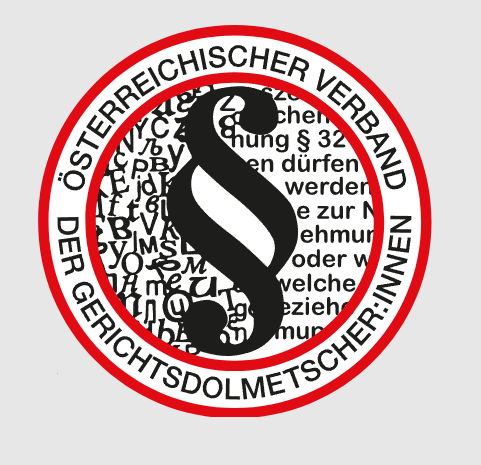
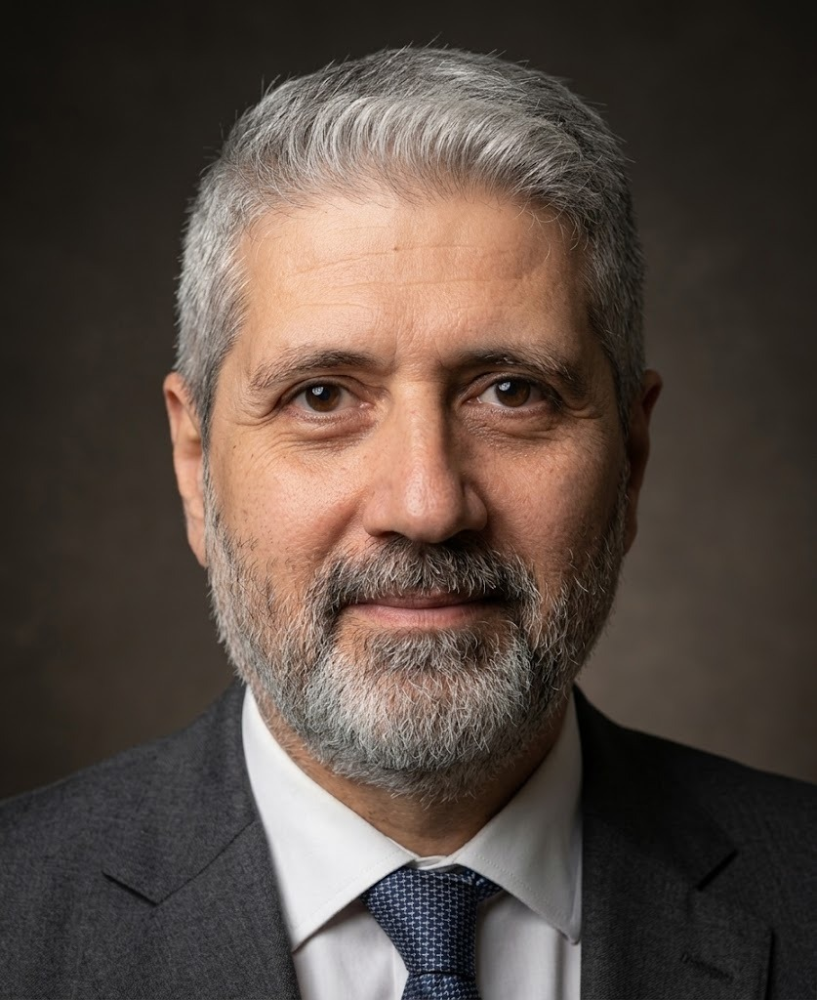

Beglaubigte Übersetzungen und Dolmetschen für Arabisch und Deutsch
Mohammad Jamil Muarrawi ist allgemein beeideter und gerichtlich zertifizierter Dolmetscher und Übersetzer in Graz. Seine Übersetzungen werden von Gerichten, Behörden und Ämtern in Österreich anerkannt.
- Allgemein beeidet und gerichtlich zertifiziert

Mitglied im ÖVGD- Büro in Graz

Von der Geburtsurkunde bis zur Gerichtsverhandlung
So läuft ein Auftrag ab
Dokument schicken
Scan oder Foto per E-Mail senden oder persönlich in Graz vorbeibringen.
Angebot erhalten
Nach Durchsicht des Dokuments folgt ein unverbindliches Angebot mit Preis und Lieferzeit.
Übersetzung erhalten
Die beglaubigte Übersetzung kommt per Post oder wird in Graz abgeholt.
Dokumente für das Ausland?
Beglaubigung und Legalisierung aus der Steiermark: in welcher Reihenfolge Stempel, Überbeglaubigungen und Übersetzung kommen.
Die Rolle der zertifizierten Übersetzung: wichtige Reihenfolge!
Wichtig: Die beglaubigte Übersetzung kommt immer ganz am Schluss.
Das Büro in Graz
Persönliche Termine finden nach telefonischer Vereinbarung statt. Dokumente lassen sich auch per E-Mail schicken.
Ein Dokument zur Hand?
Scan oder Foto schicken und ein unverbindliches Angebot erhalten.